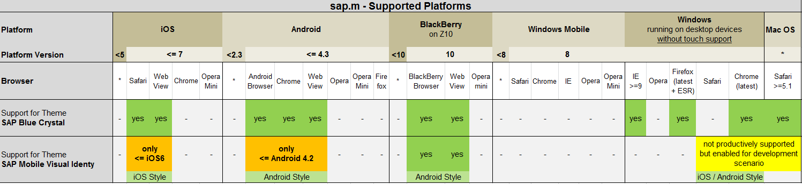

Browser Support in SAPUI5
SAPUI5 Browser Support Note
See also the SAPUI5 Browser Support Note 1716423
SAPUI5 for Desktop (Core and Standard Libraries)
As SAPUI5 for Desktop is a control library that depends on the availability of CSS3, HTML5, new JavaScript API and JavaScript speed, mainly the HTML5 capable browsers are supported.
You can see the official browser support within the product availability matrix (PAM) under http://service.sap.com/PAM, specifically the one for NW UI Extensions.
Supported Browsers
- only for Windows, not for MAC
- Internet Explorer 9 and upwards, so including IE10
- Firefox 17 (aka Firefox Extended Support Release - ESR) and latest version
- Chrome latest version
- only for MAC OS X, not for Windows
- Safari 5.1 and upwards
Browsers With Restricted Support
- Internet Explorer 8: There are degradations in visual design and over time also restricted functionality. So far, there is no functional restriction but when HTML5 features are added to SAPUI5 which are not available in IE8, there is not necessarily an alternative solution created by the SAPUI5 teams.
Browsers Which Aren't Supported
- Internet Explorer 6 and 7 and in general all browsers which are not mentioned above are not supported.
Browser Support Policies By The Different Vendors
- Internet Explorer:
- In general, IE is seen as a "component" of a "parent major product" = Windows. Every IE version is supported on a particular Windows version for as long as the Windows version is supported Explanation: "Internet Explorer is considered as a component of the operating system (OS) for which it was released. The support timelines for IE are inherited from the OS and its associated service packs. Basically, this means that the versions of Internet Explorer that shipped for a specific OS or service pack will be supported with the support lifecycle of the OS or service pack. Support for older versions of IE will not end unless we ship a replacement version of IE in a future OS service pack….As per the policy, we will not end support previous versions of Internet Explorer on supported operating system versions."
- IE6 is support is coupled with the XP lifetime even though Microsoft strongly encourages users to switch to newer browsers.
- Firefox: SAPUI5 supports ESR and the current version (at the time of writing, it is version 13)
- Firefox ESR can be downloaded but it "will be maintained with security and stability updates" only. Features and performance updates will take more time to get into ESR version.
- Safari: Apple doesn't seem to issue any information which browser version is supported until when.
- There is a concept of vintage products that have been discontinued more than 7 years ago, but this refers to hardware and not software
- The assumption is that Apple only really supports the last version of their browser
SAPUI5 for Desktop (Contributions)
SAPUI5 for Mobile
Control Library sap.m
The controls in the sap.m library support the platforms depicted in the following matrix with the exceptions listed below:

Exceptions to the support matrix depending on theme and control:
 The control 'FlexBox' is not supported in Internet Explorer 9
The control 'FlexBox' is not supported in Internet Explorer 9
- The control 'Carousel' is not supported in Internet Explorer
SAPUI5 Runtime
All parts of SAPUI5 runtime resources are compatible with all browsers mentioned above, i.e. the ones that are mentioned for desktop and mobile libraries. Exceptions to this rule are the Open Source components that are placed in SAPUI5's thirdparty folder, which is to be found under resources\sap\ui\thirdparty. SAPUI5 guarantees that the parts of these components which are directly used within the SAPUI5 runtime are compatible to all browsers supported by the desktop and mobile library unless stated differently. However, not all parts of the components under the thirdparty folder might support all browsers, in particular Internet Explorer's version 8 might not be supported by all components. For the general compatibility of the components under thirdparty check their corresponding web pages.